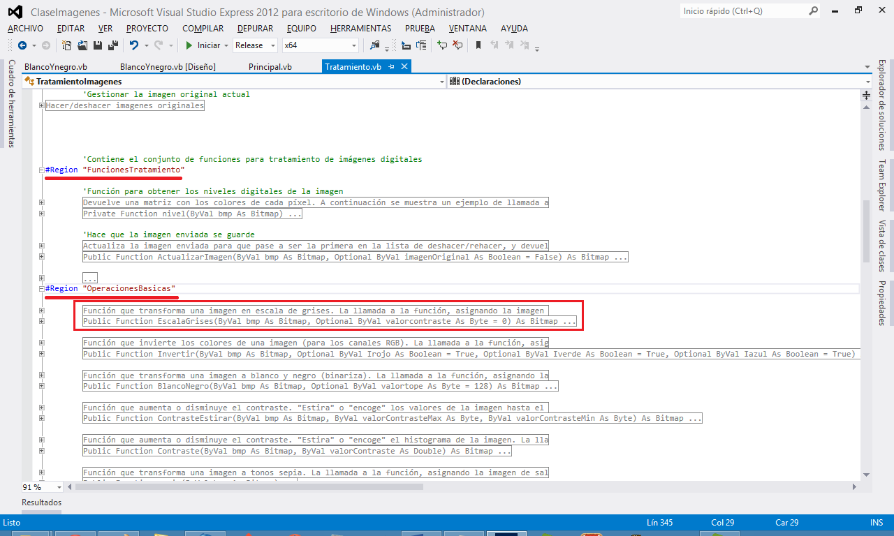
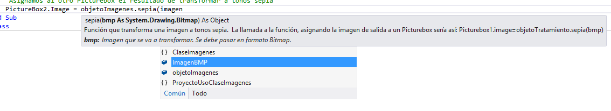
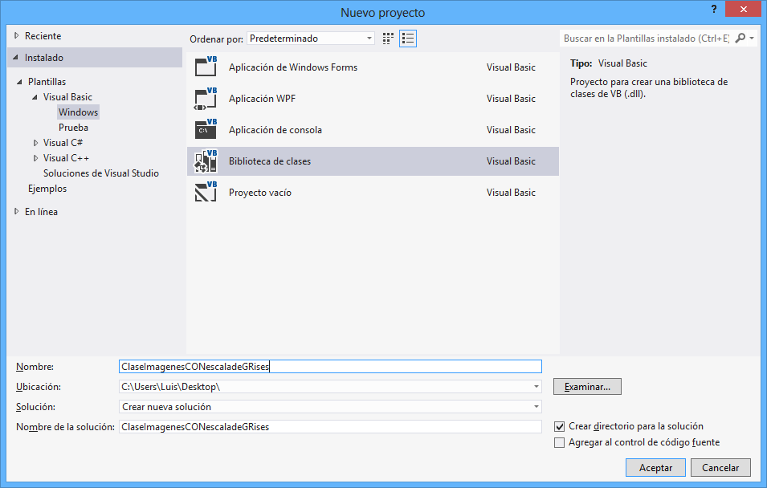
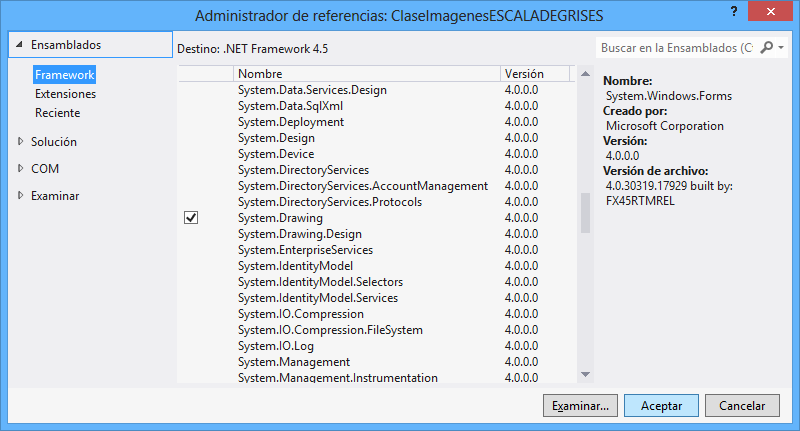
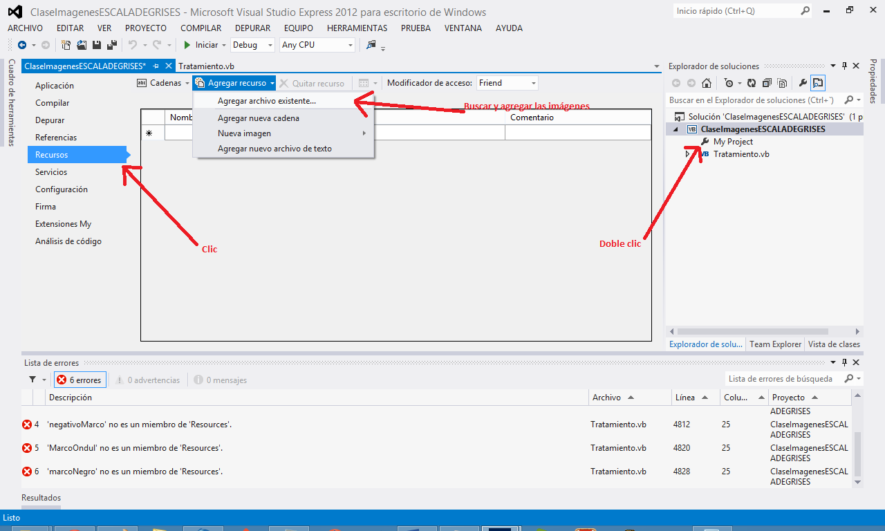
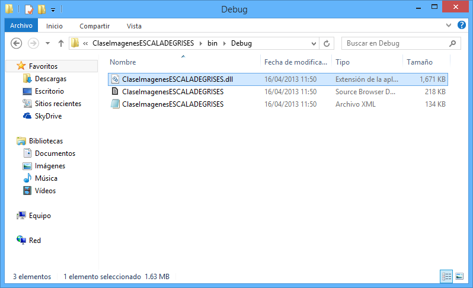

2. ¿Cómo trabajar píxel a píxel?
2.1. Paso 1. ¿Dónde incluir la función escala de grises?
2.2. Paso 2. Definir la función y sus parámetros
2.3. Paso 3. Clonar imagen recibida y leer los valores para cada píxel
2.4. Paso 4. Recorrer la imagen y calcular el nivel de gris
2.5 Paso 5. Incluir eventos y propiedades de la clase
2.6. Paso 6. Documentar la función
2.7. Paso 7. Compilar y crear la biblioteca de clases
3. Eventos y propiedades a tener en cuenta.
En este apartado se va a mostrar las pautas para adquirir, modificar y compilar ClaseImagenes y así poder adaptarlo a sus necesidades.
Las vías de adquisición son varias para adquirir el código fuente. Descargando la aplicación Apolo (disponible en git/github y en sourceforge), o bien adquiriendo la clase. A continuación se muestran las diferentes vías para adquirirla:
Una vez ha adquirido la clase y la tiene lista para usarse, ya puede empezar a modificar su código. Como puede observarse la clase está dividida en una primera zona donde están las propiedades y después tres grandes bloques:
En esta guía se va a desarrollar una función que transforme una imagen en escala de grises.
Una imagen se compone de un número de píxeles dado por el ancho y alto, y cada píxel está compuesto por 4 canales. Esto cuatro canales (rojo, verde, azul y alfa), están a su vez compuestos por 256 valores posibles, es decir, un byte de información. Al transformar una imagen, generalmente se hacen cambios sobre esos píxeles, es decir, se altera su composición ARGB (alfa, rojo, verde, azul).
En el ejemplo que se va a mostrar a continuación se pasará los valores a tonos de gris. Los tonos de gris se caracterizan por tener el mismo valor en todos los canales (RGB), siendo el menor valor el color negro (0, 0,0) y el mayor en blanco (255, 255,255). Como puede observarse, el canal alfa (la transparencia) no se va a modificar.
Para aplicar esta función hay que calcular, para cada píxel, la media de sus tres componentes (RGB) y dicha media aplicarla a los tres canales en el píxel tratado. Si se tiene un píxel con valores; Rojo = 100, Verde = 200, Azul= 50, se debe calcular la media ((100+200+50)/3) y aplicar el valor resultante a los tres canales, por lo tanto, el píxel resultante tendría los siguientes valores para cada canal; Rojo = (100+200+50)/3, Verde = (100+200+50)/3, Azul = (100+200+50)/3, haciendo el cálculo sería, Rojo = 116, Verde = 116, Azul = 116.
Una vez que se conoce la teoría de cómo actuar, se va a proceder a incluir todo esto en la clase.
Si se quiere mantener un orden, debe tener en cuenta la ubicación de la función que se vaya a crear. En este caso, la función es una transformación a escala de grises, por lo tanto su ubicación dentro de la clase estará en la región FuncionesTratamiento/Operaciones básicas. Allí se alojará la función a la que se va a denominar EscalaGrises.

Ilustración 1. Ubicación de la función.


Una vez se sabe dónde se va a situar, el siguiente paso es crear la función. En este caso, se ha optado por que la función sea pública (puesto que debe ser accesible desde fuera de la clase) y su nombre sea EscalaGrises. Esta función, recibirá un único parámetro denomida bmp que será un System.Drawing.Bitmap, y será enviado por valor. La función devuelve la imagen transformada a escala de grises, siendo un Bitmap. El esqueleto de la función sería así:
Public Function EscalaGrises(ByVal bmp As Bitmap) As Bitmap
End sub
El siguiente paso es crear un bitmap auxiliar para no utilizar directamente el que se recibe como parámetro, que, aunque sea enviado por valor, es recomendable utilizar una copia para todo el proceso. El código sería así:
'Copia del bitmap original
Dim bmp2 As Bitmap = bmp
A continuación, se van a leer los valores de los píxeles del bitmap. Para ello, existe una función que se denomina nivel. Esta función devuelve una matriz bidimensional, donde las dimensiones son el ancho/alto del bitmap enviado, y para cada celda de la matriz (cada celda representa un píxel), están disponibles los 4 canales ARGB.
'Matriz que almacenará los niveles digitales de la imagen
Dim Niveles(,) As System.Drawing.Color
'Se obtienen los valores de la imagen
Niveles = nivel(bmp2)
Una vez se ha obtenido la matriz con todos los valores de cada píxel, se debe calcular la media de cada píxel para así obtener la imagen en escala de grises. Como primer paso, se van a declarar 5 variables, conteniendo 3 de ellas el valor rojo, verde y azul de cada píxel, una cuarta variable que calculará la media y la última será un bitmap que tendrá el ancho y alto de la imagen original (bmp)
'Variable para calcular la media
Dim media As Double
'Variables auxiliares que contendrán los valores RGB
Dim rojoaux, verdeaux, azulaux As Double
'Variables que crea una copia de la imagen original
Dim bmpSalida As New Bitmap(bmp.Width, bmp.Height)
A continuación, se va a recorrer toda la matriz que contiene los valores de los píxeles de la imagen (niveles digitales). Se va a utilizar un doble bucle for, que recorrerá columna por columna la matriz.
For i = 0 To Niveles.GetUpperBound(0) 'Se recorre cada píxel de la imagen
For j = 0 To Niveles.GetUpperBound(1)
Next
Next
Una vez se ha visto cómo recorrer la imagen, se va a proceder a leer los valores de la matriz que contiene los niveles digitales y a calcular su media para asignarla al bitmap de salida (bmpSalida).
For i = 0 To Niveles.GetUpperBound(0) 'Recorremos la matriz
For j = 0 To Niveles.GetUpperBound(1)
'Se obtienen los valores de la matriz niveles
rojoaux = Niveles(i, j).R
verdeaux = Niveles(i, j).G
azulaux = Niveles(i, j).B
'Se calcula la media
media = CInt((rojoaux + verdeaux + azulaux) / 3
'Se asigna la media a los tres canales RGB
rojoaux = media
verdeaux = media
azulaux = media
'Se incluye también el canal alfa (opcional)
alfa = Niveles(i, j).A
'Con el procedimiento SetPixel se asignan los colores
bmpSalida.SetPixel(i, j, Color.FromArgb(alfa, rojoaux, verdeaux, azulaux))
Next
Next
Tras realizar esto, la imagen transformada (bmpSalida) a escala de grises ya está creado. Sólo falta retornar el valor.
'Se devuelve el bitmap pasado a escala de grises
Return bmpSalida
La función desarrollada en los puntos anteriores ya es totalmente funcional, pero hay que tener en cuenta unos pequeños detalles que harán que la función sea completamente funcional.
A continuación, se muestra el código fuente de 3 acciones que hay que tener en cuenta a la hora de crear una función. Una de ellas se gestionará desde la propiedad progreso. Esta propiedad se trata de un vector con dos posiciones, en la primera se incluirá el porcentaje de progreso de la transformación y el segundo el tipo de transformación que se llevará a cabo. Además de esta propiedad, también se debe almacenar la imagen con el método guardarimagen que la almacenará para que pueda que se almacene en la lista para poder deshacer/rehacer las transformaciones. Por último, hay que generar el evento actualizaBMP para que se detecte que hay un cambio en la imagen (y así poder actualizar un Picturebox que funcione como imagen miniatura.
El código fuente completo de clase con estos detalles (resaltados en color), se muestra a continuación:
Public Function EscalaGrises(ByVal bmp As Bitmap) As Bitmap
'Copia del bitmap original
Dim bmp2 As Bitmap = bmp
'Matriz que almacenará los niveles digitales de la imagen
Dim Niveles(,) As System.Drawing.Color
'Se obtienen los valores de la imagen
Niveles = nivel(bmp2)
'Se actualiza el porcentaje de transformación
porcentaje(0) = 0
'Se indica la transformación que se está llevando a cabo
porcentaje(1) = "Transformando imagen a escala de grises"
'Variable para calcular la media
Dim media As Double
'Variables auxiliares que contendrán los valores ARGB
Dim rojoaux, verdeaux, azulaux As Double
Dim alfa As Byte
'Variables que crea una copia de la imagen original
Dim bmpSalida As New Bitmap(bmp.Width, bmp.Height)
For i = 0 To Niveles.GetUpperBound(0) 'Recorremos la matriz
For j = 0 To Niveles.GetUpperBound(1)
'Se obtienen los valores de la matriz niveles
rojoaux = Niveles(i, j).R
verdeaux = Niveles(i, j).G
azulaux = Niveles(i, j).B
'Se calcula la media
media = CInt((rojoaux + verdeaux + azulaux) / 3
'Se asigna la media a los tres canales RGB
rojoaux = media
verdeaux = media
azulaux = media
'Se incluye también el canal alfa (opcional)
alfa = Niveles(i, j).A
'Con el procedimiento SetPixel se asignan los colores
bmpSalida.SetPixel(i, j, Color.FromArgb(alfa, rojoaux, verdeaux, azulaux))
Next
'Se actualiza el porcentaje a medida que se recorreo un columna de la matriz
porcentaje(0) = ((i * 100) / bmp2.Width)
Next
'Se indica que la transformación ha finalizado
porcentaje(1) = "Finalizado"
'Se almacena la imagen para poder hacer restroceso (deshacer)
'Se almacena la imagen y la transformación efectuada
guardarImagen(bmpSalida, "Imagen transformada a escala de grises")
'Se genera el evento que informa de que la imagen se ha transformado
RaiseEvent actualizaBMP(bmpSalida)
'Se devuelve el bitmap pasado a escala de grises
Return bmpSalida
End Function
Tras realizar esto, la clase ya está de acuerdo con la estructura general de ClaseImagenes.
El último paso para completar la función es documentarla con los comentarios XML de Visual Studio. Para ello, hay que situarse encima de la función y pulsar tres veces el carácter de comentario (‘). Automáticamente aparece una pequeña estructura XML donde se podrá incluir diversa información sobre la función. Para ver todos los detalles de los comentarios, acceder a la siguiente web, http://msdn.microsoft.com/es-es/magazine/dd722812.aspx.
Ahora, y después de pulsar tres veces el carácter de comentario encima de la función se va a rellenar la información, y el resultado sería el siguiente.
''' <summary>
''' Función que transforma una imagen en escala de grises.
''' <example>Asignando la salida a un Picturebox, la llamada sería así:
''' <code>Picturebox1.image=objetoTratamient.EscalaGrises(bmp)</code></example>
''' </summary>
''' <param name="bmp">Imagen que se va a transformar en formato Bitmap.</param>
''' <returns>Devuelve un bitmap.</returns>
Una vez completado esto, la clase está lista para implementarse en la clase ClaseImagenes. Como se podría observar, tras incluir los comentarios XML, el examinador de objetos mostraría toda la información de la función e IntelliSense también.

Ilustración 2. Detalle función en IntelliSense.


Una vez se han seguido todos los pasos anteriores, la clase es totalmente funcional y está totalmente integrada con la clase ClaseImagenes. Ahora, si se quiere exportar la clase como Biblioteca de clases, hay que abrir un nuevo proyecto de Visual Basic .NET como Biblioteca de clases. Se le da un nombre y se acepta. En unos segundos tendrá creado un nuevo proyecto.

Ilustración 3. Nuevo proyecto Biblioteca de clases.


Una vez realizado esto, aparecerá un único elemento denominado Class1.vb el cual eliminaremos. Como siguiente paso, se busca y se agrega la clase ClaseImagenes modificada, y tendremos un proyecto como Biblioteca de clases el cual únicamente tendrá nuestra clase.
Al agregar la clase se observará que no reconoce las variables Bitmap, entre otras. Para solucionar esto, basta con hacer clic con el botón derecho encima del proyecto (en el Explorado de soluciones) y seleccionar Agregar referencia. En la sección Ensamblados/Framework incluir las referencias a System.Drawing y System.Windows.Forms.

Ilustración 4. Agregar ensamblados.


Ahora sólo faltaría un último detalle. Como se observa en la zona que determina los errores de código, hay 6 errores referentes a que no se encuentra el recurso (Resources) de marco, CineFotos, negativoMarco, marcoNegro, MarcoOndul. Esto es debido a que la clase a la hora de crear marcos se sirve de 5 imágenes. Para solucionarlo, basta con buscar en la carpeta Resources de la clase original (ClaseImagenes), estos 5 archivos, y agregarlos como recurso a la biblioteca de clases que se está creando. Esto se hace desde el Explorador de soluciones haciendo doble clic en la sección My Project y en la ventana que se abre buscando la sección Recursos y agregando las 5 imágenes (que se encuentran como se ha dicho en la carpeta Resources del proyecto original).

Ilustración 5. Buscar y agregar las imágenes.


Una vez agregadas las imágenes, se hace clic en la barra superior en la opción Compilar/Compilar solución. En unos segundos se habrá compilado correctamente y dentro de la carpeta del proyecto, en la ruta bin/Debug o bin/Release (depende de cómo se haya compilado), estará disponible la biblioteca lista para su uso.

Ilustración 6. Ruta de la Biblioteca de clases.


Como se ha visto en el desarrollo anterior, hay una serie de eventos y propiedades que hay que tener en cuenta a la hora de desarrollar funciones para ClaseImagenes.
Hay dos eventos en la clase, uno para indicar que se ha recibido una imagen y ésta se ha transformado y otro para indicar que se ha abierto una imagen nueva y por lo tanto, se ha modificado el nombre, tamaño y origen de la imagen original actual. El código fuente sería:
'Se genera el evento que informa de que la imagen se ha transformado
RaiseEvent actualizaBMP(bmpSalida)
'Se genera un evento que informa de que se ha abierto una imagen nueva. Se utiliza la función nombreImagen para obtener el nombre de la imagen evento y enviamos nombre, ancho, alto y origen de la imagen
RaiseEvent actualizaNombreImagen({nombreImagen("C:/Users/imagenPrueba.jpg"), bmp.Width, bmp.Height, "Desde archivo"})
También existen un conjunto de propiedades que debe utilizarse a la hora de implementar funciones dentro de la clase.
La variable porcentaje (accesible desde fuera de la clase como propiedad denominada estadoCarga) sirve para indicar el porcentaje realizado en una transformación y el tipo de transformación realizado. Esta variable en un vector con dos posiciones, en la primera se incluye el porcentaje y en la segunda el tipo de transformación. Esta variable es muy útil a la hora de recorrer los píxeles de una imagen. A continuación se muestra un ejemplo.
'Se actualiza el porcentaje de transformación
porcentaje(0) = 0
'Se indica la transformación que se está llevando a cabo
porcentaje(1) = "Transformando imagen a escala de grises"
Hay otra propiedad (que realmente no se utiliza directamente, sino mediante el método guardarImagen) almacena una imagen cuando se ha realizado una transformación, es decir, en su función justo antes de devolver la imagen transformada se debe llamar al método de la siguiente forma.
'Se almacena la imagen y la transformación efectuada
guardarImagen(bmpSalida, "Imagen transformada a escala de grises")
Por último, cuando se crea una función que abre una imagen nueva (por ejemplo gestiona la opción de abrir imágenes desde archivo), se debe almacenar esa imagen como original, es decir, no es una transformación, sino una imagen abierta desde el exterior. Para ello se utilizan dos propiedades. En el siguiente ejemplo se puede ver cómo funcionan:
'Se guarda la imagen original (en formato bitmap)
ImagenOriginalGuardada = abrirImagen
'Se incluye información sobre su origen
imagenOriginalInfo = "Imagen original desde archivo"
Created with the Personal Edition of HelpNDoc: iPhone web sites made easy